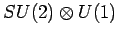

Inhalt Index DeskTop Bronstein

 Algebra und Diskrete Mathematik Klassische algebraische Strukturen Anwendungen von Gruppen
Algebra und Diskrete Mathematik Klassische algebraische Strukturen Anwendungen von Gruppen


Weitere Beispiele für die Anwendung spezieller kontinuierlicher Gruppen in der Physik können hier lediglich genannt werden. Weiterführende Literatur s. 5.11, 5.15.
U(1): Eichtransformationen der Elektrodynamik.
SU(3): Vielteilchenprobleme der Kernphysik.
SO(4): Entartung im Wasserstoffspektrum.
SU(4): WIGNER-Supermultipletts im Schalenmodell der Kerne durch Vereinigung von Spin- und Isospinfreiheitsgraden; Beschreibung von Flavour-Multipletts im Quarkmodell unter Einbeziehung des Charm-Freiheitsgrades.
SU(6): Multipletts im Quarkmodell durch Kombination von Flavour- und Spinfreiheitsgraden; Kernstrukturmodelle.
U(n): Schalenmodelle in Atom- und Kernphysik.
SU(n), SO(n): Vielteilchenprobleme der Kernphysik.
: Standardmodell der elektroschwachen Wechselwirkung.
 : Vereinheitlichung der fundamentalen Wechselwirkungen (GUT).
: Vereinheitlichung der fundamentalen Wechselwirkungen (GUT).